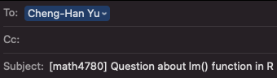

| Grade | Percentage |
|---|---|
| A | [94, 100] |
| A- | [90, 94) |
| B+ | [87, 90) |
| B | [83, 87) |
| B- | [80, 83) |
| C+ | [77, 80) |
| C | [73, 77) |
| C- | [70, 73) |
| D+ | [65, 70) |
| D | [60, 65) |
| F | [0, 60) |
Syllabus
Click here to download the syllabus.
Time and location
| Day | Time | Location | |
|---|---|---|---|
| Lectures | Tu & Th | 5:00 - 6:15 PM | Cudahy Hall 120 |
| Lab | None | None | None |
Office Hours
My in-person office hours are TuTh 3:20 - 4:50 PM, in Cudahy Hall room 353.
You are welcome to schedule an online meeting via Microsoft Teams if you need/prefer.
Learning objectives
By the end of the semester, you will be able to…
- analyze real data to answer questions about relationships among variables.
- fit and evaluate linear and logistic regression models.
- assess whether a proposed model is appropriate and describe its limitations.
- communicate results from statistical analyses to a general audience.
Prerequisites
MATH 2780 (Intro to Regression and Classification), MATH 4720 (Intro to Statistics) or equivalent.
Programming experience is helpful because the course involves doing regression analysis using programming language.
Some linear algebra exposure at the level of MATH 3100 (Linear Algebra and Matrix Theory) would helps especially for MSSC 5780 students as some matrix operations are used for modeling and computation.
MSSC 5780 students, having taken MATH 4700 (Probability) and MATH 4710 (Statistical Inference) would help too.
Talk to me if you are not sure whether or not this is the right course for you.
E-mail Policy
I will attempt to reply your email quickly, at least within 24 hours.
Expect a reply on Monday if you send a question during weekends. If you do not receive a response from me within two days, re-send your question/comment in case there was a “mix-up” with email communication (Hope this won’t happen!).
Please start your subject line with [math4780] or [mssc5780] followed by a clear description of your question. See an example below.

Email etiquette is important. Please read this article to learn more about email etiquette.
I am more than happy to answer your questions about this course or statistics in general. However, due to time constraint, I may choose NOT to respond to students’ e-mail if
The student could answer his/her own inquiry by reading the syllabus or information on the course website or D2L.
The student is asking for an extra credit opportunity. The answer is “no”.
The student is requesting an extension on homework. The answer is “no”.
The student is asking for a grade to be raised for no legitimate reason. The answer is “no”.
The student is sending an email with no etiquette.
Textbooks
Required Textbook
- (LRA) Introduction to Linear Regression Analysis, 6th edition, by D. C. Montgomery, E. A. Peck and G. G. Vining. Publisher: Wiley. (Graduate-level book that requires knowledge of matrix algebra)
Optional References
In addition to the textbook, the course materials are borrowed from the following books:
(ROS) Regression and Other Stories by Andrew Gelman, Jennifer Hill, and Aki Vehtari. Publisher: Cambridge University Press.
(CAR) An R Companion to Applied Regression, by John Fox and Sanford Weisberg. Publisher: SAGE. (Doing regression much easier by the
carandeffectsR packages.)(RD) Regression Daignostics, by John Fox. Publisher: SAGE.
(CMR) Classical and Modern Regression with Applications, by Raymond Myers. Publisher: Duxbury Press. (The textbook I used for my master degree).
Programming Languages
The default language of this course is . Python code will be provided as well. Due to time constraint, I will NOT teach you or Python programming from A to Z. If you never use R/Python and would like to grasp its syntax quickly, read my MATH 3570 R/Python programming slides on D2L. I am more than happy to answer any questions about if you have any. There are a lot of online resources for learning including the sites below.
You may use any other language to complete your homework, exams and project. However, I will not debug your code or provide comments on any technical issues of those languages.
Grading Policy
Students in this class range from juniors to second-year PhD students, so it makes sense to evaluate student performance using a different scale.
The homework/exams questions involving matrix algebra (MATH 3100) and calculus-based probability and statistical inference (MATH 4700/4710) are optional for MATH 4780 students.
For students in MATH 4780, the final grade is earned out of 1000 total points distributed as follows:
- Homework 1 to 6: 600 pts (100 pts each)
- Final project: 400 pts
- (Optional) MSSC problems: Up to extra 50 pts
For students in MSSC 5780, the final grade is earned out of 1200 total points distributed as follows:
- Homework 1 to 6: 600 pts (100 pts each)
- Final project: 400 pts
- (Required) MSSC problems: 200 pts
You will NOT be allowed any extra credit projects/homework/exam to compensate for a poor average. Everyone must be given the same opportunity to do well in this class. Individual exam will NOT be curved.
The final grade is based on your percentage of points earned out of 1000 or 1200 points and the grade-percentage conversion Table. \([x, y)\) means greater than or equal to \(x\) and less than \(y\). For example, 94.1 is in \([93, 100]\) and the grade is A and 92.8 is in \([90, 94)\) and the grade is A-.
- This is not a course that gives most of students grade A. If you want to obtain a good grade, study hard. No pain, no gain.
Homework
Homework will be assigned through the course website in weekly modules.
To submit your homework, please go to Assessments > Dropbox and upload your homework in PDF format.
There will be 6 homework sets to be graded, Homework 1 to 6.
Some questions are required for MSSC students.
You will get a better understanding of the material if you discuss it with others. However, you must submit YOUR OWN work.
NO LATE HOMEWORK WILL BE ACCEPTED NOR WILL YOU BE ALLOWED TO MAKE UP MISSED HOMEWORK!
- Handwriting is not allowed for data analysis part.
Final Project
- A detailed final project guideline will be released later.
University and college policies
As a student in this course, you have agreed to comply with Marquette undergraduate policies and regulations.
Accommodation
If you need to request accommodations, or modify existing accommodations that address disability-related needs, please contact Disability Service.
Important dates
- Sept 4: Labor day
- Sept 5: Last day to add/swap/drop
- Oct 19-20: Midterm break
- Nov 17: Withdrawal deadline
- Nov 22-26: Thanksgiving
- Dec 7: Last day of class
- Dec 19: Final grade submission
Click here for the full Marquette academic calendar.